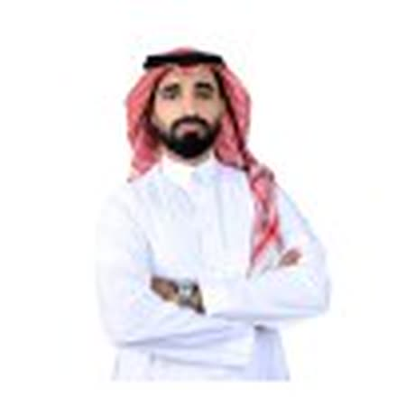

Senior IT Infrastructure & Systems Engineer with 5+ years designing, operating, and securing enterprise environments — including 3+ years at Riyad Bank. I build reliable, highly-available, and secure hybrid infrastructure.

I design, administer, and harden complex hybrid infrastructure across Windows Server, Active Directory, Hyper-V, Nutanix HCI, Citrix VDI, and Microsoft Azure — with a strong focus on reliability, high availability, and secure operations.
Operating in a regulated banking context, I enforce MFA & least-privilege access, apply security hardening baselines, manage privileged access workflows, and drive vulnerability remediation across production and DR environments — aligned with the SAMA Cybersecurity Framework and NCA Essential Cybersecurity Controls (ECC).
I keep growing hands-on: I built a cloud-native mini-SOC on Microsoft Sentinel (KQL detections mapped to MITRE ATT&CK, Infrastructure-as-Code) and a home-network monitoring & DNS-filtering system on Docker — both open-sourced. This security-aware mindset makes me a stronger infrastructure engineer.
The tools and platforms I use to run production and disaster-recovery environments at enterprise scale.
From front-line IT support to running virtualized infrastructure for one of Saudi Arabia's leading banks and a government entity.
Vendor-certified across virtualization, cloud, networking, and security.
Hands-on labs where I turn real infrastructure and security concepts into reproducible, documented systems.
A cloud-native Security Operations Center on Microsoft Sentinel: log ingestion, KQL detections mapped to MITRE ATT&CK, and end-to-end incident investigation — deployed as Infrastructure-as-Code.
Self-hosted network monitoring and network-wide DNS filtering with NetAlertX + Pi-hole on Docker: automatic device discovery, new-device alerts, and one-click domain blocking across every device.
Open to Senior Infrastructure & Systems Engineering roles in Saudi Arabia. Always happy to connect.